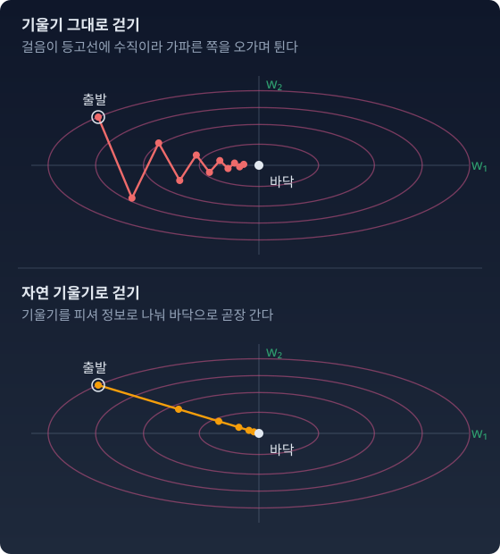

자연 기울기: 피셔 계량을 따라 걷기
앞 절에서 본 처방은 폭이 바뀔 때마다 학습률을 1/n 로 손으로 다시 맞추는 것이었다. 실제 신경망은 층이 수십 개이고 층마다 입력 차원이 다르니, 이 맞춤을 층마다 따로 해야 한다.
“폭마다 학습률을 손으로 다시 맞추는 대신, 한 걸음의 크기를 처음부터 분포의 눈금으로 잴 수는 없는가?”
정의
보통의 경사하강법은 파라미터 공간의 유클리드 거리를 쓴다. 아마리(Shun’ichi Amari)가 1998년 논문 「자연 기울기는 학습에서 효율적으로 작동한다(Natural Gradient Works Efficiently in Learning)」에서 다듬은 자연 기울기는 피셔 계량 아래에서 가장 가파른 방향으로 간다.
평평한 바닥에서의 한 걸음과 가파른 비탈에서의 한 걸음을 같은 크기로 만드는 장치 — 그것이 자연 기울기다. 아래 그림은 손실의 등고선이 한쪽으로 길게 늘어난 경우에 두 걷기를 견준다.

그림의 손실은 ½(0.5w₁² + 4w₂²) 이고 피셔 정보는 I = diag(0.5, 4) 이다(출력이 가우시안인 선형 모델에서는 둘이 같다). 기울기 그대로 걸으면 가파른 w₂ 쪽 기울기가 걸음을 좌우해서 골짜기를 오가며 튀고, 완만한 w₁ 쪽으로는 조금씩밖에 못 나아간다. 기울기를 I 로 나누면 방향마다 걸음이 그 방향의 눈금에 맞춰 줄고 늘어 바닥으로 곧장 간다(lr = 0.5 면 한 걸음마다 바닥까지의 거리가 절반이 된다).
앞 절의 예(폭 n 인 층 하나, y = w·x, 입력 좌표 ±1)에서는 I 가 n 에 비례하는 방향을 가지므로, I⁻¹ 이 그 방향의 걸음을 1/n 로 줄인다. 폭에 맞춘 학습률 조정이 저절로 들어 있다.
하나뿐인 자, 그러나 파라미터 위에서는
첸초프(Chentsov)의 정리에 따르면, 분포의 공간에서 충분통계량 변환(데이터를 요약해도 정보를 잃지 않는 변환) 아래에서 바뀌지 않는 계량은 (상수배를 빼면) 피셔 하나뿐이다. 하지만 신경망의 파라미터 공간은 분포의 공간이 아니다. 뉴런의 순서를 바꾸거나 ReLU 앞뒤로 크기를 옮기는 것처럼, 서로 다른 가중치가 똑같은 분포를 내는 일이 흔하다(비식별성). 그래서 파라미터 위의 피셔 행렬은 대개 특이하고(역행렬이 없고), 거기에 첸초프의 유일성은 그대로 적용되지 않는다. 정확한 말은 이렇다. 파라미터 위의 피셔는 분포 공간의 자를 파라미터로 끌어온(pullback) 것이다. 실제 구현은 I 의 대각선에 작은 값 ε을 더해 역을 구한다.
파이썬
「가장 작은 예」의 층에 자연 기울기를 걸어 본다. 입력 하나로 만든 피셔 I = xxᵀ 는 x 방향 하나에만 값이 있어 역행렬이 없으므로, 대각선에 ε = 10⁻⁶ 을 더해 푼다.
import numpy as np
rng = np.random.default_rng(0)
lr, eps = 0.5, 1e-6
for n in [64, 256, 1024, 4096]:
x = rng.choice([-1.0, 1.0], n)
w = rng.standard_normal(n) / np.sqrt(n)
y, target = w @ x, 1.0
g = (y - target) * x # 「가장 작은 예」의 층과 기울기
I = np.outer(x, x) # 피셔 정보 (출력 분산 1, 입력 하나)
dw = -lr * np.linalg.solve(I + eps * np.eye(n), g)
print(f"n={n:5d} 오차 y−t {y - target:+.3f} 출력 변화 {x @ dw:+.3f} 걸음 길이 ‖dw‖ {np.linalg.norm(dw):.4f}")
# n= 64 오차 y−t +1.104 출력 변화 -0.552 걸음 길이 ‖dw‖ 0.0690
# n= 256 오차 y−t -0.855 출력 변화 +0.428 걸음 길이 ‖dw‖ 0.0267
# n= 1024 오차 y−t -0.974 출력 변화 +0.487 걸음 길이 ‖dw‖ 0.0152
# n= 4096 오차 y−t -0.929 출력 변화 +0.465 걸음 길이 ‖dw‖ 0.0073
lr = 0.5 를 모든 폭에 그대로 썼는데, 출력 변화는 늘 오차의 절반만큼 목표 쪽이다. 폭에 따라 줄어드는 것은 파라미터 공간의 걸음 길이 ‖dw‖ 쪽이다(오차가 같다면 1/√n 꼴). 폭마다 손으로 하던 1/n 맞춤을 I⁻¹ 이 대신한다.
Adam은 자연 기울기인가
Adam 을 「피셔 대각 근사로 한 자연 기울기」라고 부르는 설명을 자주 본다. Adam 은 기울기 제곱의 평균으로 걸음을 나누는데, 피셔 정보도 기울기 제곱의 평균으로 쓸 수 있기 때문이다. 이 말이 맞는지는 아래 문제 5에서 숫자 둘로 직접 걸어 확인한다.
수확
“자연 기울기는 피셔 자로 잰 한 걸음이다. 학습률 하나로 폭이 다른 층을 같은 출력 변화로 걷게 한다. 파라미터 위의 피셔는 분포 공간의 자를 끌어온 것이라 역행렬이 없을 수 있고, 그때는 대각선에 작은 값을 더해 푼다.”
문제 4. 좌표 이름표를 바꾸면
데이터는 정규분포 N(0, 1) 에서 오고, 모형은 평균을 0 으로 고정한 N(0, σ²) 이다. 지금 σ = 0.5 다. 손실은 L(σ) = log σ + 1/(2σ²)(데이터와 모형 사이 KL 에서 σ 와 상관없는 상수를 뺀 것)이다. 피셔 정보는 σ 를 좌표로 쓰면 2/σ², s = log σ 를 좌표로 쓰면 2 다. (가) 보통 경사하강 lr = 0.01 로 한 스텝 걸은 뒤의 σ 를, σ 좌표로 걸을 때와 s 좌표로 걸을 때 각각 구하라. (나) 자연 기울기 lr = 0.01 로 같은 일을 하라. (다) 어느 쪽 걷기가 「좌표를 무엇으로 적느냐」에 덜 휘둘리는가? lr 을 0.001 로 줄이면 어떻게 되는가?
함께 풀기

손실도 같고 lr 도 같으니까 좌표만 바꾼다고 다른 곳에 가진 않겠죠. 그래도 계산해 볼게요. σ 좌표에서는 dL/dσ = 1/σ − 1/σ³ = 2 − 8 = −6 이니까 σ = 0.5 + 0.01 × 6 = 0.56.

s 좌표에서는 dL/ds = σ·dL/dσ = −3 이라 s 가 0.03 늘고, σ = 0.5·e0.03 = 0.515. 같은 손실을 같은 lr 로 내려왔는데 0.56 과 0.515 예요.

둘 중 어느 쪽이 맞는 걸음이에요?

맞고 틀리고를 가를 기준이 없어요. σ = 0.5 근처에서 s 가 0.01 늘면 σ 는 0.005 쯤 느니까, 두 좌표의 한 칸은 길이가 달라요. 기울기도 같은 비율로 달라지니까 s 좌표의 걸음은 σ 로 옮기면 σ² 배가 돼요. 0.06 대 0.015, 정확히 1/σ² = 4 배 차이예요.
자연 기울기로 걸으면요?
σ 좌표: 기울기 −6 을 피셔 2/σ² = 8 로 나누면 −0.75, σ = 0.5 + 0.0075 = 0.5075. s 좌표: −3 을 피셔 2 로 나누면 −1.5, s 가 0.015 늘어 σ = 0.5·e0.015 = 0.50756. 거의 같아요. 그런데 완전히 같지는 않네요. 0.00006 차이가 나요.
lr 을 0.001 로 줄이면 그 차이는 어떻게 돼요?

걸음은 0.00075 로 10분의 1이 되는데, 차이는 0.00000056 으로 100분의 1이 돼요. 걸음에 비해 차이가 점점 사라져요. 자연 기울기는 걸음을 분포가 달라지는 정도로 재니까, 아주 작은 걸음에서는 좌표를 무엇으로 적든 같은 분포로 가요. 남는 차이는 휘어진 좌표 위를 곧게 걸어서 생기는 걸음 제곱 크기의 차이고요.
적분에서 변수를 바꾸면 dx 앞에 야코비안이 붙어서 값이 그대로인 것처럼, 피셔가 좌표를 바꿀 때 생기는 배율의 제곱을 알아서 곱해 주는 거네요.
문제 5. Adam 은 피셔로 나누는가
입력이 x = (2, 0.5) 하나뿐인 선형 모델 y = w₁x₁ + w₂x₂ 가 출력 분산 1 인 가우시안을 낸다. 지금 오차는 y − t = 0.2 라서 기울기는 g = (0.4, 0.1) 이고, 매 스텝 같은 기울기가 나온다고 하자. (가) 지수이동평균이 다 쌓인 뒤 Adam 의 한 스텝을 구하라(분모에 더하는 작은 값은 무시한다). (나) Adam 이 나누는 값에서 제곱근을 빼고 기울기 제곱 g² 로 나누면 걸음은 어떻게 되는가? 오차가 0.02 로 줄면 이 걸음은? (다) 이 모델의 피셔 정보의 대각선은 무엇이고, 그것으로 나눈 걸음은 어떻게 되는가?
함께 풀기
Adam 의 v 는 기울기 제곱의 평균이고, 피셔 정보도 기울기 제곱의 평균이잖아요. 그러니까 v 로 나누는 Adam 이 대각 피셔로 나눈 자연 기울기 맞죠.
(가)부터 숫자로 걸어 봐요.
기울기가 늘 같으니 m = g = (0.4, 0.1), v = g² = (0.16, 0.01). 걸음은 −lr·m/√v = −lr·(0.4/0.4, 0.1/0.1) = −lr·(1, 1). 두 좌표가 똑같이 lr 만큼 움직여요.
제곱근이 있어서 그래. √v 는 |g| 라서 결국 기울기의 부호만 남아. 자연 기울기라면 제곱근 없이 g² 로 나눠야 하잖아.

그럼 g² 로 나누면 (0.4/0.16, 0.1/0.01) = (2.5, 10). 오차가 0.02 로 줄면 기울기가 열 배 작아지니까 (25, 100)… 목표에 다가갈수록 걸음이 열 배씩 커져요. 이러면 바닥에서 튀어 나가겠는데요.
피셔 정보의 정의에서 제곱하는 기울기는 어떤 정답으로 계산하죠?

모형이 낸 분포에서 뽑은 정답이에요. 데이터의 정답이 아니라요. 출력 분산이 1 인 가우시안에서 뽑은 y 는 평균 둘레로 분산 1 만큼 흩어지니까, 피셔는 xxᵀ 이고 대각선은 (4, 0.25) 예요. 오차와 상관이 없어요. 이걸로 나누면 (0.4/4, 0.1/0.25) = (0.1, 0.4).
셋이 다 다르네요. Adam 은 (1, 1), 데이터 정답으로 만든 g² 는 (2.5, 10), 진짜 피셔는 (0.1, 0.4).
데이터의 정답으로 만든 기울기 제곱의 평균을 「경험적 피셔」라고 불러요. 쿤스트너(Frederik Kunstner) 외(2019)는 경험적 피셔가 일반적으로 손실을 두 번 미분한 값의 정보를 담지 못한다는 것을 보였고, 그래서 Adam 을 자연 기울기나 이차 방법과 잇는 논증도 흔들린다고 했어요. 번스타인(Jeremy Bernstein)과 뉴하우스(Laker Newhouse)(2024)는 지수이동평균을 끈 Adam 이 기울기의 부호만 따라가는 걸음이라는 데서 출발해 다른 읽기를 내놓았고요. 그 읽기는 Muon 을 다루는 절에서 다시 만나요.
강의 계획서에 「상대평가」라고 적혀 있어도 실제로 순위로 매기는지 점수 구간으로 매기는지는 계산식을 봐야 아는 거랑 같네요. 이름보다 식을 먼저 확인해야겠어요.